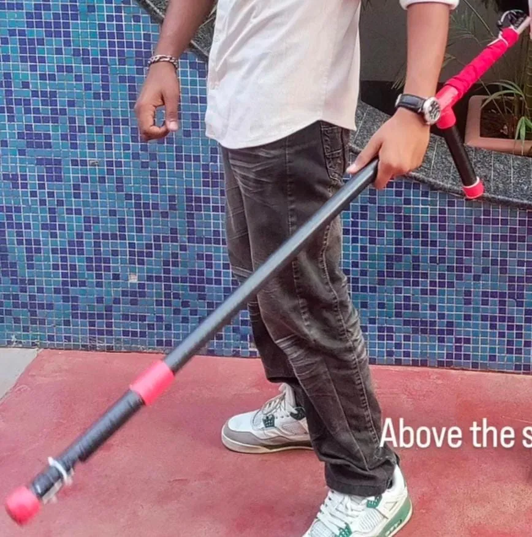

GuideX: Automatic Blind Stick
Project Overview
GuideX is an assistive hardware prototype designed specifically for visually impaired individuals. It replaces the traditional white cane with a smart, battery-powered stick that uses ultrasonic wave reflection to map the user's immediate environment. When obstacles fall within a hazardous threshold, the user is alerted by an audible buzzer, vastly improving navigation and physical safety.

Key Features
- Real-time Obstacle Detection: Continuous pinging using ultrasonic sound waves to measure exact distances to objects.
- Instant Feedback: Immediate buzzer alerts when an object is detected within the predefined danger radius.
- Wireless & Portable: Completely battery-powered (Li-ion) to ensure it acts as a lightweight, everyday tool.
- Hard-Soldered Reliability: Built completely without breadboards, utilizing direct soldering for a compact and durable physical footprint.
Hardware Stack
The device is built to be extremely power-efficient and lightweight using the following components:
- Arduino Nano: The logic processor evaluating distance and triggering the alert loop.
- HC-SR04 Ultrasonic Sensor: Acts as the "eyes" of the stick, transmitting and receiving sound waves.
- TMB12A12 Buzzer: Provides the loud, immediate auditory feedback required to alert the user in loud environments.
The Code & Logic
Written in C++, the logic evaluates the `distanceThreshold` variables in real-time. If the time-of-flight from the ultrasonic ping calculates a distance that falls below the safe parameter, it instantly activates the high-pin output for the buzzer.
View Code on GitHub →